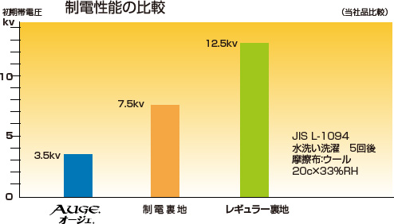

ポリマー複合の改良と独自紡糸技術によって生まれた導電糸使いにより、従来より優れた静電気防止性能をもつ裏地を開発しました。
1導電糸を縦糸に約1㎝間隔に使用することによって、従来の制電裏地に比べ、優れた静電気防止性能を持ちます。
2 「オージェ」に使用する導電糸はポリマー改良により目立ちにくくしているため、きれいな表面感の裏地となります。
3静電気防止性能は摩耗や洗濯などにより損なわれることなく、半永久的に持続します。

※加工の条件、使用方法によっては性能に差が生じる場合がありますので、事前確認の上、ご使用ください。
ＫＢセーレン株式会社
衣料資材販売部
kbs.info@kb.seiren.com